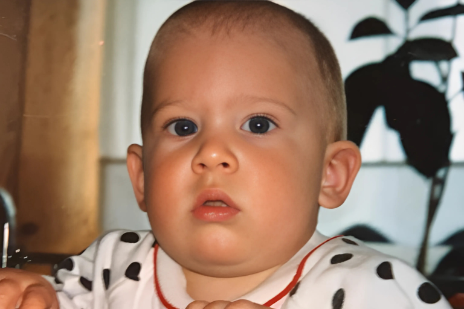
1993
On September 3, 1993, Dominic is born in Wiener Neustadt, around 45 minutes from Vienna.
Timeline
From the early days to the top.

On September 3, 1993, Dominic is born in Wiener Neustadt, around 45 minutes from Vienna.
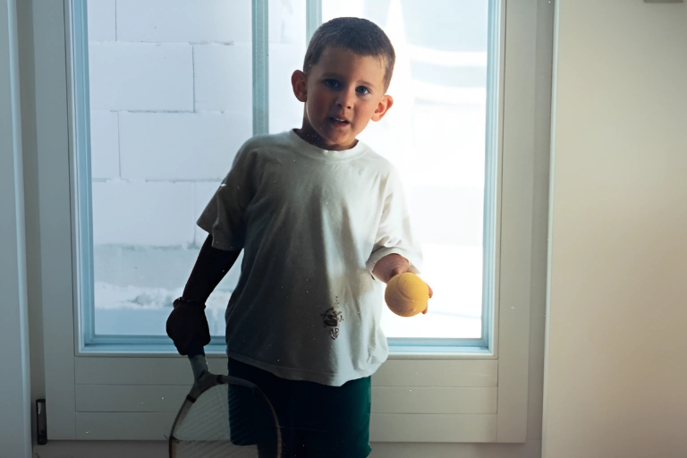
In 1997, Dominic picks up a tennis racquet for the first time. At that point, no one could have imagined that one day he would compete for the biggest titles on the world’s greatest courts.
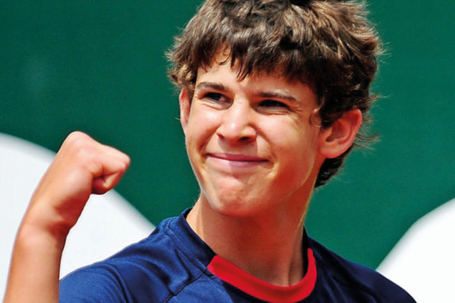
From 2005 to 2011, Dominic already makes a name for himself at a young age. He reaches the Roland Garros junior final and climbs to No. 2 in the U18 junior world ranking.
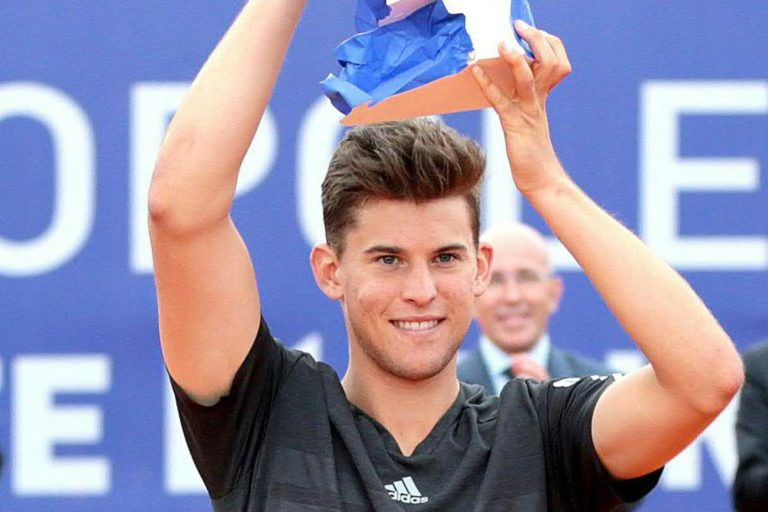
In 2015, the breakthrough comes: Dominic wins his first ATP title in Nice. This success marks a decisive step toward the top of world tennis. It remains the only tournament in his career that he wins in back-to-back years.
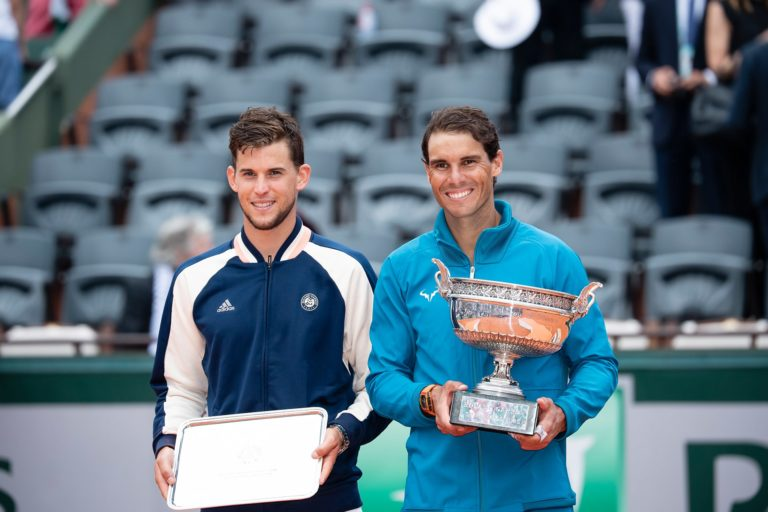
By 2018, Dominic is already among the best tennis players in the world. In that year, he celebrates his biggest achievement so far: reaching the Roland Garros final, the most prestigious clay-court tournament in the world. Only Rafael Nadal, the “King of Clay,” can stop him.
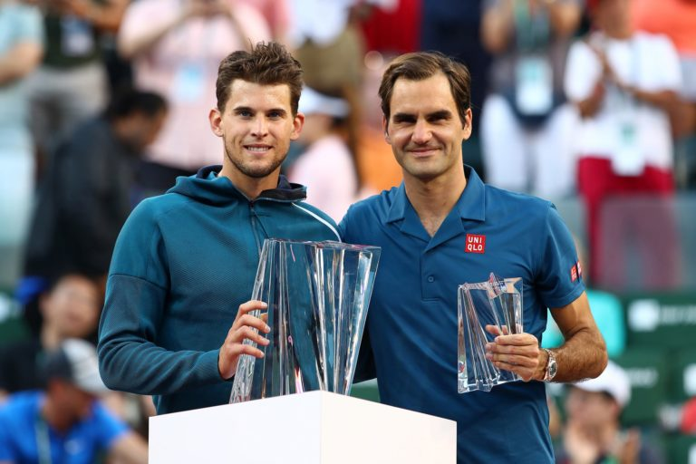
In 2019, Dominic sets new highlights. Alongside another French Open final, where he is again beaten by Nadal, he wins his biggest title to date: the ATP 1000 tournament in Indian Wells, often called the “fifth Grand Slam.” In the final, he defeats Roger Federer, one of the greatest players of all time.
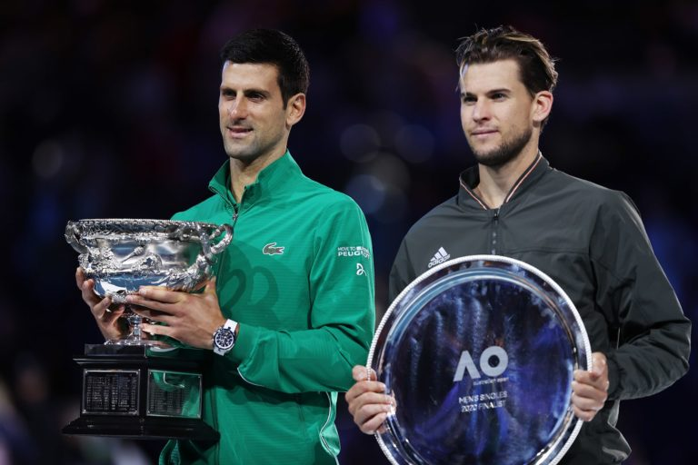
2020 is meant to be Dominic’s year — he wants to fulfill his biggest dream: winning a Grand Slam title. At the start of the year, he plays his best tennis and reaches the Australian Open final. Along the way, he defeats Rafael Nadal and Alexander Zverev. In the final, he faces Novak Djokovic, arguably the greatest player of all time. After an epic five-set thriller, Dominic falls just short.
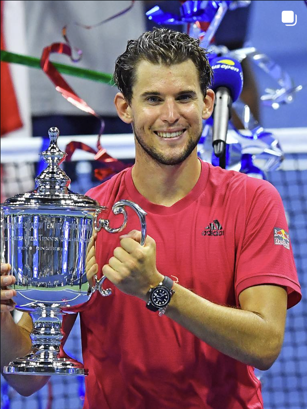
A few months later, Dominic crowns his career with his greatest triumph: US Open Champion 2020.
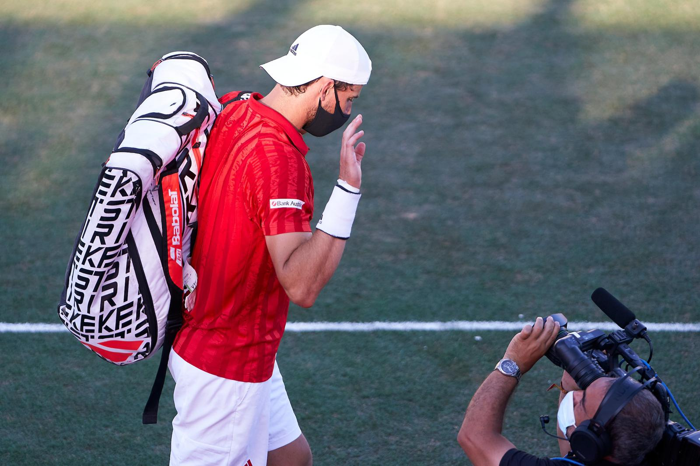
From 2021 to 2023, Dominic battles a severe wrist injury suffered at the ATP tournament in Mallorca. Despite every effort, his wrist never fully returns to its former strength.
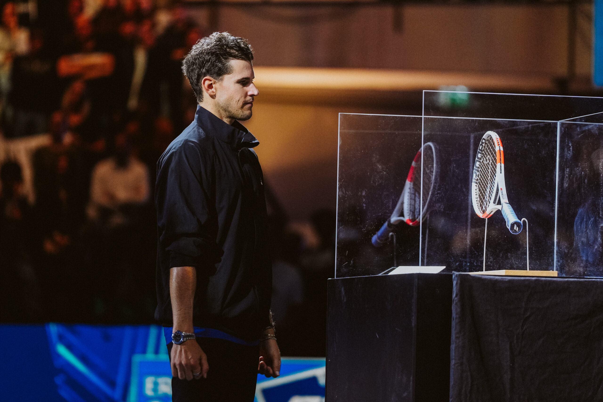
In 2024, Dominic makes the decision to end his career. He plays ten more tournaments, including the US Open, which is especially close to his heart. He plays his final match in a sold-out Wiener Stadthalle in front of nearly 9,000 passionate fans. An emotional and dignified farewell.
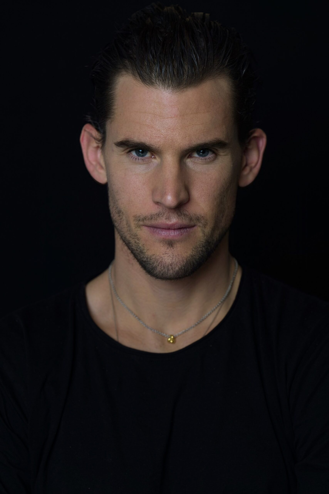
In 2025, Dominic opens a new chapter in his life. With full passion, he focuses on his core projects: Thiem Energy and Thiem Academy Burgenland. His goal is to make our planet more sustainable, help other people, and support young tennis players on their path to the top. In doing so, he not only wants to pass on sporting skills, but also values such as sustainability and groundedness. With this mission, Dominic continues his success story beyond the tennis court.
Biography
Career Path
2020
Career Highlight
Greatest career achievement: winning the US Open 2020 — becoming the first player in over 70 years to come back from a two-set deficit in a Grand Slam final.
2016-2022
At the Top
A total of 17 ATP titles (including Indian Wells, Vienna, Kitzbühel), two French Open finals, and one Australian Open final. Career-high ranking: World No. 3. Multiple wins against the “Big Three.”
October 23, 2024
Career End
Concluded his remarkable career at home in Vienna’s Stadthalle in front of nearly 9,000 fans.
TODAY
Sustainability Projects
Following his career, Dominic focuses on his projects:
Thiem Energy
A forward-thinking model for fair and sustainable energy.
Mission: Rethinking energy — community-driven, independent, future-proof.
Thiem View
Lifestyle and sports sunglasses with a clear commitment to sustainability.
Thiem View combines design, performance, and responsibility for the planet.
Mission: Rethinking style — sustainably made, consciously worn.
SINCE 2025
Talent Development
The academy fosters character, discipline, and a sense of responsibility. Dominic acts as a mentor, role model, and driving force for the next generation.
Dominic Thiem stands not only for exceptional sporting achievement, but also for inspiration, authenticity, and a vision that goes far beyond the tennis court.